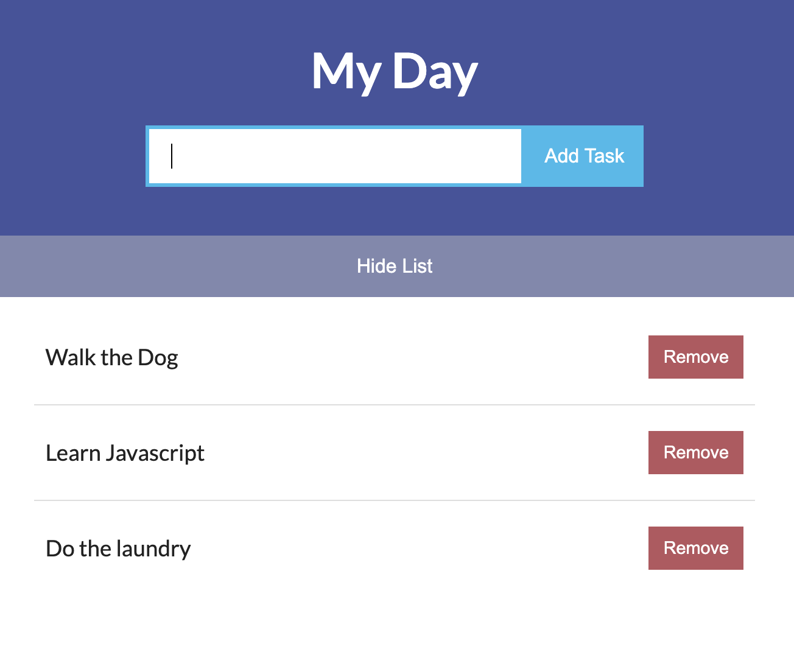
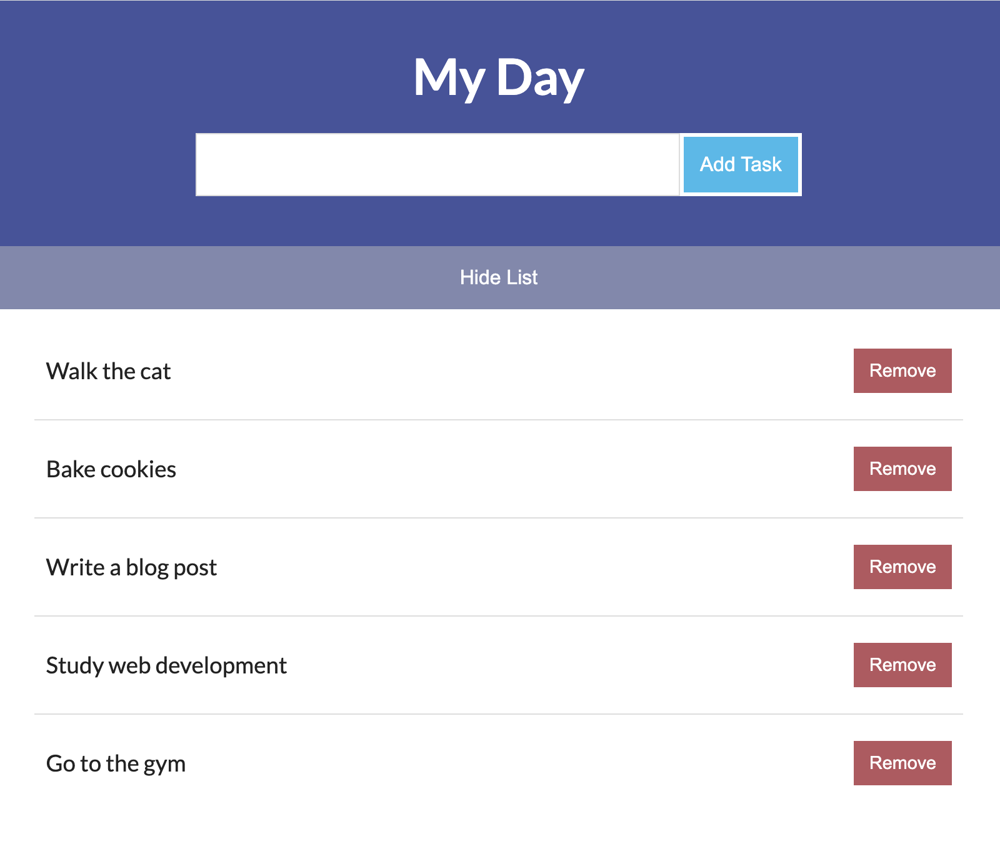

Javascript to do list
The second project i worked on through Teamtreehouse's course is a simple Javascript to-do list. While this isn't an advanced application, it gave me fundamental javascript experience.
The project includes a couple of important Javascript features. An "Add Task" button that adds the input of the user to a list. We then have a list of all the inputs added one after the other, with "Remove" buttons that are programmed to delete them. The list also includes a "Hide list/Show List" toggle button.